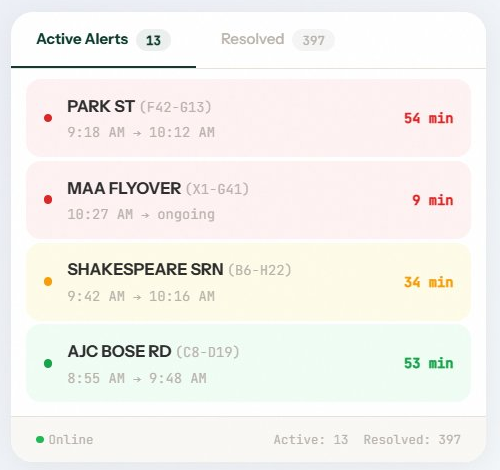
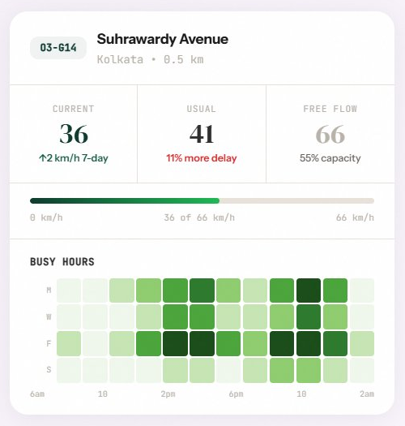

100% SOFTWARE · DEPLOYS IN WEEKS · EVERY ROAD, EVERY CITY
TrafficCure turns the road data your city already generates into decisions. One software platform maps congestion on every road, scores it, and shows exactly where signal timing, enforcement, and infrastructure money will move the needle — no cameras, no sensors, no construction.
FROM RAW GOOGLE MAPS FEEDS TO BOARD-ROOM
REPORTS, TRAFFICURE COVERS THE FULL PIPELINE—COLLECTION,
SCORING, DIAGNOSIS, ACTION.
BUILT AROUND RMI, OUR SCORING FRAMEWORK
THAT RANKS EVERY ROAD IN THE NETWORK BY CONGESTION SEVERITY.
LIVE DATA SOURCE
Built on Google Maps.
Probe data from a billion smartphones, refreshed every
two minutes, across every road in your city — delivered
through Google’s Roads Management Insights feed.
DELHI — CONNAUGHT PLACE GRID
CLEARSLOWCONGESTEDLIVE
0min
Network-wide refresh cycle
REFRESH RATE
0B+
Smartphones feeding live speed data
DATA SOURCES
0%
Road coverage, not just camera junctions
COVERAGE
Features
Real-Time Congestion Alerts
The moment traffic deviates from normal on any
road in the city, your team knows. Alerts push to your command
centre, mobile phones, email, or WhatsApp — so
you can intervene before the situation escalates.
Configurable speed thresholds per corridor
Multi-channel delivery — email, WhatsApp, SMS
Live command centre dashboard
[ HOVER — SEE IT LIVE ]

Deep Road-Level Analytics
Go beyond the surface. See speed profiles for
any road across 24 hours, compare today against 7-day or 31-day
averages, and identify the root cause of recurring congestion
patterns.
24-hour speed profiles for any road
Historical comparison — 7-day and 31-day
Network-wide congestion heatmaps
[ HOVER — SEE IT LIVE ]

Automated Performance Reports
Daily, weekly, and monthly reports land in your
inbox and WhatsApp automatically. No manual data-pulling, no Excel
gymnastics. Just clear, consistent proof that your traffic
management is working.